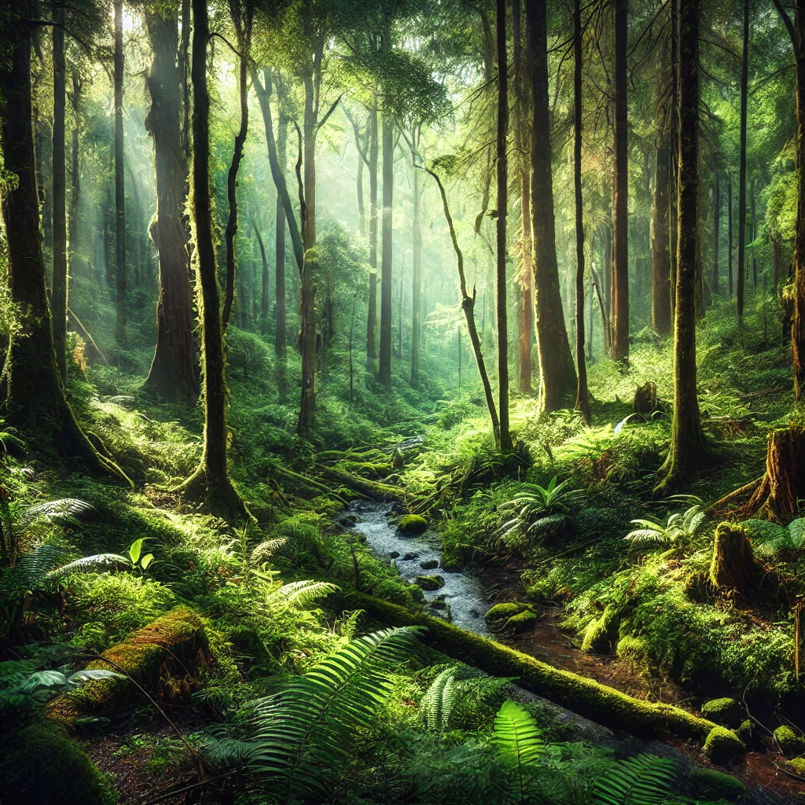

Em um reino distante, tres aventureiros se reuniram em uma taverna na cidade de Eledor. Alana, a arqueira de olhos de aguia; Brion, o guerreiro de forças descumonal; e Ciro, o mago sabio e sereno, ouviram falar de uma floresta magica que guarda um tesouro lendario... eles chegam à entrada da Floresta Encantada, em busca de um tesouro perdido.
dentro da floresta os aventureiros encontram uma bifurcacao